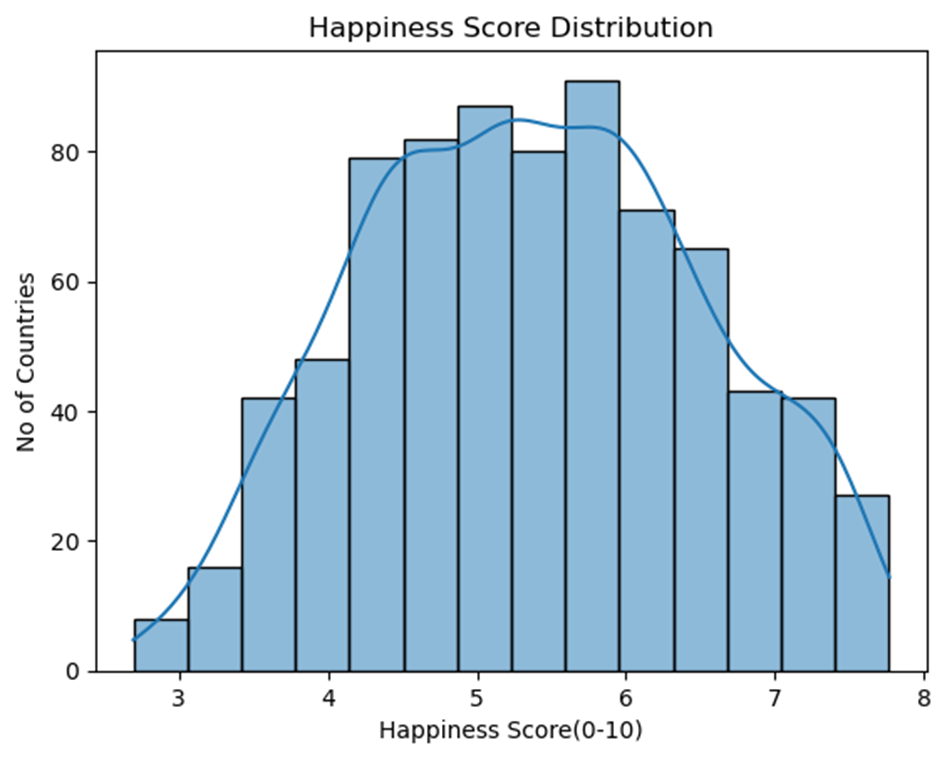
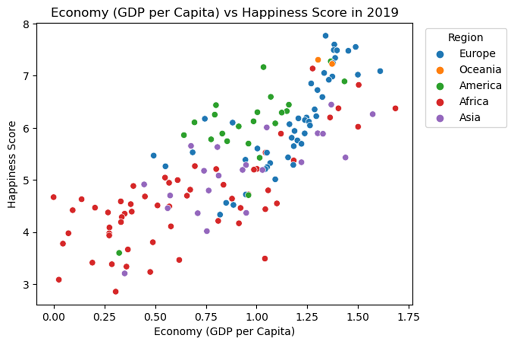

Understanding World Happiness: What Makes Countries Happy?
What truly makes people happy around the world? Is it money in their pockets, their health, strong family ties, or something completely different? I wanted to understand the factors behind global happiness, so I analyzed data from the World Happiness Report spanning 155 countries from 2015 to 2019.
The data tells a fascinating story about what drives happiness across different cultures and regions. Let me walk you through what I discovered.
CASE - Understanding World Happiness
I analyzed the World Happiness Report data covering 155 countries over five years (2015-2019) to identify which factors have the strongest influence on national happiness. The goal was to understand what truly drives well-being at a country level and how these factors interact. This analysis could help guide policy decisions and social initiatives aimed at improving quality of life.
How happy are countries around the world?
First, I looked at the happiness landscape across countries. Most nations score between 4 and 7 on the 10-point happiness scale. Only a handful experience extreme happiness (8+) or unhappiness (below 3).
This tells us that most countries maintain moderate happiness levels, with some notable exceptions at both ends of the spectrum. The distribution forms a relatively normal curve, suggesting that extreme happiness or unhappiness are statistical outliers.

Most countries have moderate happiness scores
Does money buy happiness?

GDP per Capita vs Happiness Score
When looking at GDP per capita versus happiness scores, I found a strong positive relationship. Simply put, richer countries tend to be happier countries.
What's interesting is that the relationship isn't perfect - some wealthy nations report lower happiness than expected, while some less wealthy countries perform better than their economic status would suggest.
The data shows economic prosperity creates a foundation for happiness, but doesn't guarantee it on its own.
Living longer, living happier
Health emerged as another strong predictor of happiness. Countries where people live longer tend to report higher happiness levels.
This makes intuitive sense - societies that support better healthcare and longer lives typically provide better overall quality of life.

Health and happiness go hand in hand
The power of relationships

Family support vs happiness
Family connections and social support also showed a strong positive correlation with happiness across regions.
Countries where people feel supported by family and friends consistently scored higher on the happiness scale.
Freedom to choose
The analysis revealed that personal freedom also plays an important role in happiness. Countries where citizens feel greater freedom to make life choices tend to be happier places.
However, the relationship varies more across cultures than factors like GDP or health.

Freedom contributes to happiness, with varying impact by country
Trust in government

Trust in government vs happiness
Government corruption (or its absence) shows a moderate relationship with happiness. The happiest nations typically have lower perceived corruption, though many countries maintain moderate happiness despite governance challenges.
This suggests people can adapt to certain institutional limitations, though good governance certainly helps.
Does generosity matter?
Interestingly, generosity showed the weakest correlation with national happiness.
Most countries show moderate generosity levels, with a few standouts, but this doesn't translate directly to happiness the way economic and health factors do.

Generosity has a weaker correlation with happiness
A tale of two happy countries: Finland vs. Canada
For a deeper understanding, I compared Finland and Canada between 2015 and 2019. Finland started with happiness comparable to Canada but steadily climbed to become the world's happiest country by 2019. Meanwhile, Canada experienced a slight decline despite similar patterns in GDP and life expectancy.

Finland's happiness increased while Canada's slightly declined, despite similar economic patterns.
What made the difference? While both countries maintained solid scores across key factors, Finland showed particular stability in social support and trust in government, suggesting these factors may have been crucial to Finland's happiness trajectory.
Happiness around the world

Regional happiness distribution
Looking at regional patterns, I found that the Americas and Oceania have more consistent happiness levels across their countries – less disparity between the happiest and least happy nations.
Europe and Asia display greater variations, while African nations generally report lower happiness levels with some exceptions.
Your geographical location matters for happiness, but local factors still create significant differences within the same region.
Happiness over time
When tracking happiness between 2015-2019, I discovered that happiness isn't static. Some nations maintained stable levels, while others showed notable increases or decreases. This dynamic nature of happiness underscores how societal well-being responds to changing conditions – economic developments, policy changes, and social shifts all play a role.

The five-year trends show stable, rising, and declining patterns among the world's happiest countries.
What creates happiness?
My journey through the world happiness data reveals that economic prosperity and health form the strongest foundation for national happiness. However, the complete picture includes social connections, personal freedoms, and good governance. Different countries weave these elements together in their unique ways.
Perhaps the most important insight is that happiness isn't determined by any single factor. It's created through a complex interplay of conditions that support good lives – material needs, physical health, social bonds, and freedom to make meaningful choices. The good news? There are many paths to improving well-being, and progress in any of these dimensions may contribute to happier societies.
Note on methodology: While conducting additional research, I found some important context about the World Happiness Report's methodology. The rankings are primarily based on the Cantril ladder question, which measures life satisfaction rather than emotional happiness. Some researchers and Finnish citizens themselves have pointed out potential cultural biases in how people respond to happiness surveys.
For example, in Finland, there's a cultural tendency to respond to questions about life satisfaction in a particular way due to social norms. Additionally, the report doesn't fully capture emotional well-being – when measured specifically on positive emotions (like joy, laughter, etc.), Finland ranks much lower (25th place in the Gallup Global Emotions Report), while countries with lower GDP often score higher on emotional happiness.
This nuance reminds us that "happiness" is complex and multidimensional, with different cultures experiencing and expressing it in diverse ways. The World Happiness Report provides valuable insights, but like any measurement tool, it has limitations in capturing the full human experience of happiness.
This analysis is based on data from the World Happiness Report (2015-2019) measuring happiness across 155 countries through the Gallup World Poll.